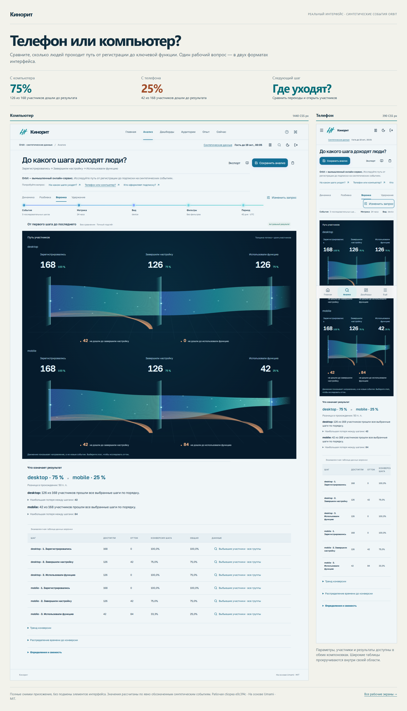

Вопрос перед цифрой
У результата есть период, участники и определение. Подписи объясняют, сколько людей прошло путь и на каком переходе их стало меньше.
Работающий интерфейс · синтетические события
Финальные снимки приложения: от первого вопроса до сохранённого анализа, дашборда и действий конкретного пользователя. Здесь можно сопоставить все основные разделы, темы и мобильные экраны.
Выберите раздел, тему и устройство.

Снимок пока недоступен. Финальные файлы должны находиться рядом с этой галереей.
События, условия и период определяют вопрос. Воронка, подписи и объяснение результата используют один реальный расчёт.
У результата есть период, участники и определение. Подписи объясняют, сколько людей прошло путь и на каком переходе их стало меньше.
Можно изменить условия, изучить участников, сохранить анализ, добавить его на дашборд и выгрузить данные. Ошибки сохраняют рабочий контекст.
Синтетический набор обозначен. Исторические события не притворяются живым потоком, а неполный период удержания не выдаётся за окончательные 0%.
Снимки работающего приложения.

Эта галерея показывает приложение, снятое в браузере. Все имена и события демонстрационного набора синтетические. Снимки отдельных разделов могут отражать разную сохранённую работу внутри этого набора; это не доказательство равенства любых двух аналитических запросов.
Ранние imagegen-макеты M21 служили поиском направления и не являются точной копией опубликованного интерфейса. Финальная визуальная проверка опирается на рабочие снимки этой галереи и сравнение до/после.